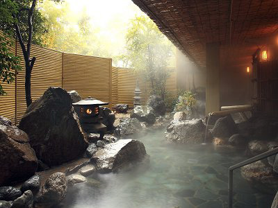
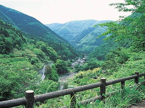
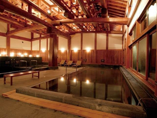

温泉

‐石和温泉‐
ブドウ畑から突如として湧出した温泉です。
肌への効能が高く、田園地帯に温泉施設が点在しており、現在でも年間約170万人が訪れます。
周辺ではイベントが盛りだくさんなので合わせて楽しんで下さい。

‐下部温泉‐
下部温泉は神経痛や冷え性に疲労回復に効くだけではなく
神経炎・慢性筋肉リュウマチ等にも効きます。
この多くの効能を持った下部温泉は
川中島の戦いで傷を負った武田信玄が湯治に訪れたともいわれています。

‐ふじやま温泉‐
ふじやま温泉は富士山麓に建つ日本最大級の木造浴室の温泉施設であり
美肌効果に高い効果があります。
疲れを癒すために最適な温泉です。
PAGE TOP